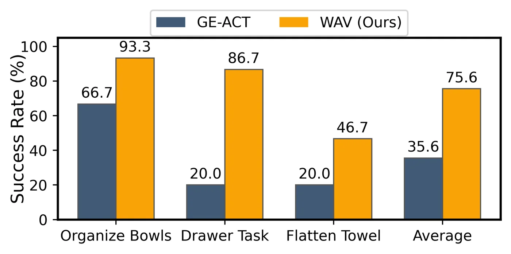
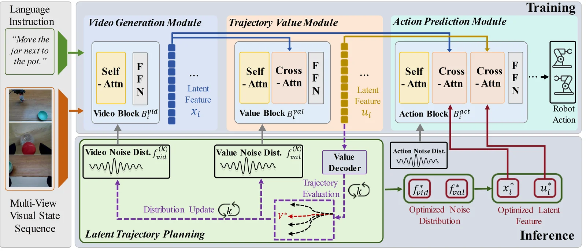
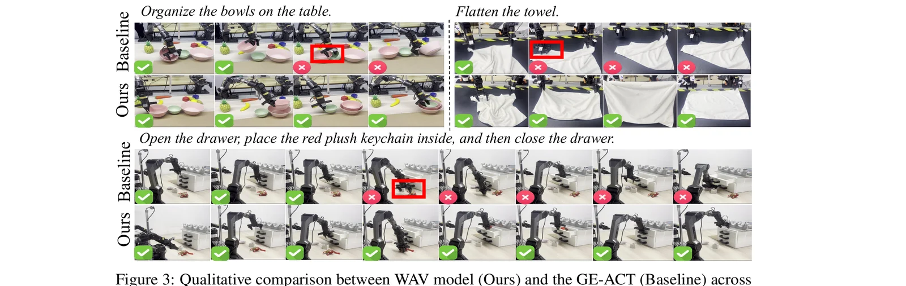
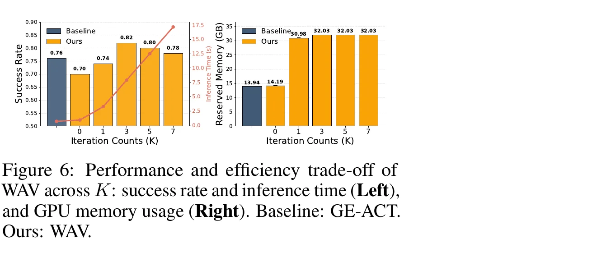

WAV（World–Value–Action）为 VLA 系统引入统一的隐式规划框架：一个视频生成式 world model 预测未来视觉状态，一个 trajectory value 模块评估其长期效用，动作生成被建模为在隐空间中对高价值、动态可行轨迹的概率推断，而不是显式的轨迹优化。作者证明直接在动作空间中规划存在"可行轨迹概率随规划步长指数衰减"的问题，而隐空间推断能够指数级地把概率质量重新分配到可行轨迹上。
多数现有 VLA 方法依赖 direct action prediction，把每个决策步骤当作独立预测，"lacking the ability to reason over long-horizon trajectories and evaluate their consequences"，这限制了它们在复杂决策任务中的表现。与此同时，world model 一线的工作虽然能预测未来状态，但通常"do not provide a principled mechanism for evaluating trajectories or selecting actions"。作者由此提出一个根本性问题：
"can planning be learned as an implicit inference process, rather than implemented as an explicit optimization module?"
论文首先给出理论刻画：把规划视为在轨迹空间 X = SH × AH 中采样，其环境维度随规划步长 H 线性增长，而真正满足物理动力学、接触约束与任务语义的可行轨迹集合 Mtraj 只是其中一个低维流形。Lemma 4.1（Vanishing Feasible Mass）证明：在均匀探索下，采到近似可行轨迹的概率随 H 呈指数衰减，即 μ(N_ε(M_traj)) / μ(X) ≤ exp(-cH)。这意味着直接在动作空间中做长时程规划，"the vast majority of sampled trajectories are infeasible by construction, irrespective of the planner's sophistication or the fidelity of the underlying models"。
相对地，Proposition 4.2（Latent Reweighting of the Search Distribution）证明：若一个学习到的隐空间生成器 Wθ 能以概率 ≥1-δ 把隐变量映射到可行轨迹集合，则隐空间采样相对于动作空间均匀采样，可行轨迹概率的比值满足 ≥ exp(cH)(1-δ) —— 即隐空间推断能"assigns exponentially larger probability mass to feasible trajectories relative to direct action-space sampling as the horizon grows"。但仅仅可行还不够：Corollary 4.3 进一步证明，即便隐分布已把概率质量放在可行集合上，一次性（one-shot）采样在固定、次指数级的样本预算下也无法保证以高概率找到近最优轨迹，因此需要 iterative 隐空间规划来逐步把概率集中到高价值轨迹上。

WAV 把规划与控制拆解为三个紧密耦合、共享 DiT（Diffusion Transformer）backbone 的模块："1) a language-conditioned video generation module for predicting future visual trajectories; 2) a trajectory value module for long-horizon evaluation; and 3) an action module for generating executable robot actions"。三者通过 flow matching 联合训练，推理阶段再通过类 MPPI 的迭代式隐空间轨迹规划（Algorithm 1），让动作生成"arises from inference over predicted futures guided by trajectory value"。

训练遵循 "a three-stage training strategy based on flow matching"：第一阶段仅用 video flow loss L_vid = E[‖v_θ(t,l,o,x⁰) − (x¹−x⁰)‖²] 训练视频生成模块；第二阶段冻结视频模型，训练轨迹价值模块以预测 cumulative discounted return，用与 ReinboT 类似的 rule-based dense reward；第三阶段联合训练所有模块的动作 flow loss。三个模块共享 DiT backbone，但分别通过各自的 Self-Attn / Cross-Attn / FFN block（Bvid、Bval、Bact）承担视频预测、价值评估、动作解码。
推理时，WAV 借鉴 Model Predictive Path Integral (MPPI) 的思想，"instead of fixing latent priors to standard Gaussians, we adaptively update the noise distributions of the video and value modules based on trajectory evaluations"。具体地：每轮迭代 k 先采样 M 组 video latent noise，经视频生成模块解码出对应的 video feature；对每个 video feature 再采样 N 组 value latent noise 并评估其状态价值 v；用价值预测的 Signal-to-Noise Ratio（SNR）作为稳定的打分标准，取每个 video 分支中 N 次评估里最可靠的一个作为该分支得分 φ；根据 φ 排序选出 top-K1 的 video 分支更新视频 noise 分布，选出全部 M×N 个价值样本中 SNR 最高的 top-K2 更新价值 noise 分布，并施加 variance decay 与 exponential smoothing（平滑参数 α, β）避免分布过早坍塌。经过 K 轮迭代后，从最终分布采样并解码出 optimized latent feature，交由动作解码模块生成最终 robot action。
仿真实验在 LIBERO benchmark（Spatial / Object / Goal / Long 四个任务套件，分别探测空间推理、物体级泛化、目标条件行为与长时程组合任务）上进行；真实世界实验在双臂机器人平台 Piper 上开展，对比基线为使用同一视频预训练模型、参数量相近的 GE-ACT。
| Model | Params | Spatial | Object | Goal | Long | Avg |
|---|---|---|---|---|---|---|
| Diffusion Policy | - | 78.3 | 92.5 | 68.3 | 50.5 | 72.4 |
| OpenVLA | 7b | 84.9 | 88.4 | 79.2 | 53.7 | 76.5 |
| π₀ | 3b | 96.8 | 98.8 | 95.8 | 85.2 | 94.2 |
| π₀.₅ | 3b | 98.8 | 98.4 | 96.4 | 93.4 | 96.8 |
| OpenVLA-OFT | 7b | 97.6 | 98.4 | 97.9 | 95.0 | 97.3 |
| VLA-Adapter | 0.5b | 97.8 | 99.2 | 97.2 | 95.0 | 97.3 |
| UniVLA (world model) | 4.5b | 95.4 | 98.8 | 93.5 | 94.0 | 95.5 |
| F1 (world model) | - | 98.2 | 97.8 | 95.4 | 91.3 | 95.7 |
| GE-ACT (world model) | 2b | 98.2 | 97.6 | 95.8 | 94.6 | 96.5 |
| WAV (Ours) | 2.2b | 99.6 | 100.0 | 98.6 | 94.4 | 98.1 |
| WAV, w/o Latent Trajectory Planning | 2.2b | 99.0 | 99.6 | 95.0 | 91.8 | 96.4 |
Table 1（节选自论文原表，完整表格共 ~20 个基线）。"Our method achieves state-of-the-art (or competitive) performance across all task suites, with an overall average score of 98.1." 值得注意的是，在 Long 套件上 WAV 的 94.4 并非绝对最高——OpenVLA-OFT/VLA-Adapter 达到 95.0，这里如实展示，未做美化。
代表性任务包括 bowl organization、towel flattening，以及一个 long-horizon drawer task（"opening a drawer, placing an object inside, and closing it"）。评测采用严格的二元成功指标："a trial is considered successful only if the task is fully completed, with no partial credit."

去掉 latent trajectory planning 后，平均性能下降 1.7 点，"with the largest degradation on the Long suite, decreasing from 94.4 to 91.8"，且"the performance gap widens with increasing task horizon"，说明隐式规划对缓解长时程误差累积尤其有效。
对迭代次数 K 与采样规模 M（video 数）、N（value 数）的消融显示：K 从 1 增到 5 有明显提升，继续增到 10 只有边际收益；性能对 M 高度敏感（尤其在低采样数区间），而对 N 的敏感性更温和，说明"dense value evaluation provides limited additional benefit once a reasonable estimation is achieved"。对平滑参数 α、β 的消融显示，过小的 α 会导致成功率骤降，说明"stabilizing the update of the latent distribution is crucial"；对 elite 数量 K1、K2 的消融则显示性能相对稳定，仅在极小取值时明显退化。

"The main limitation of current work is the time and storage overhead required for model deployment." 作者将扩展到更丰富的多模态指令、以及在真实机器人系统上实现实时闭环部署列为未来方向（future directions）。
Fig. 6 显示，WAV 在 K≥1 时的显存占用（约 30.98–32.03GB）远高于基线 GE-ACT（13.94GB），且推理时间随迭代次数 K 增大而持续增长；作者选择 K=3 作为性能-效率的折中，但这意味着相比单步直接预测的 VLA baseline，WAV 的部署代价明显更高。
论文附录明确说明："Our analysis is not intended as a tight optimality guarantee, but rather as a geometric and probabilistic characterization of the search difficulty inherent to high-dimensional trajectory spaces." Lemma 4.1 / Proposition 4.2 / Corollary 4.3 依赖于对可行轨迹集合内在维度、隐生成器覆盖率 δ 等假设，实际系统中这些量难以直接验证。